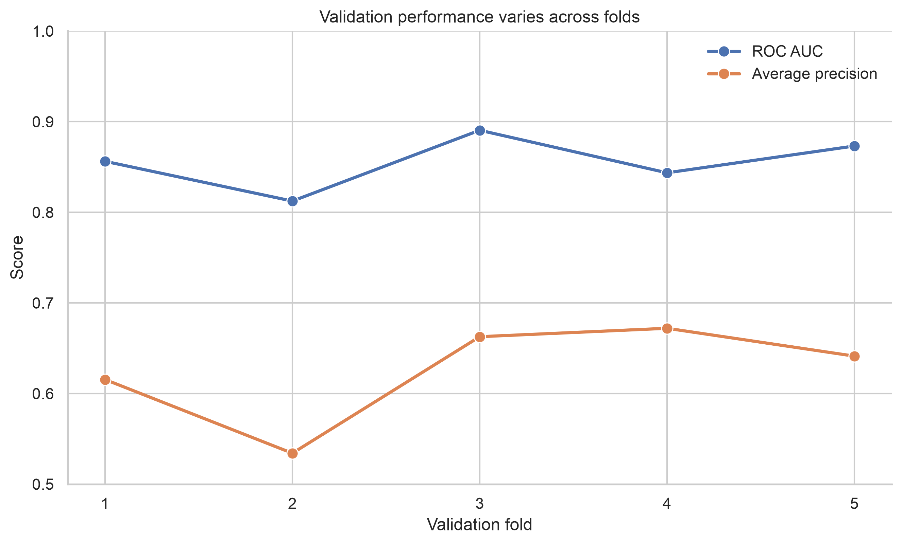
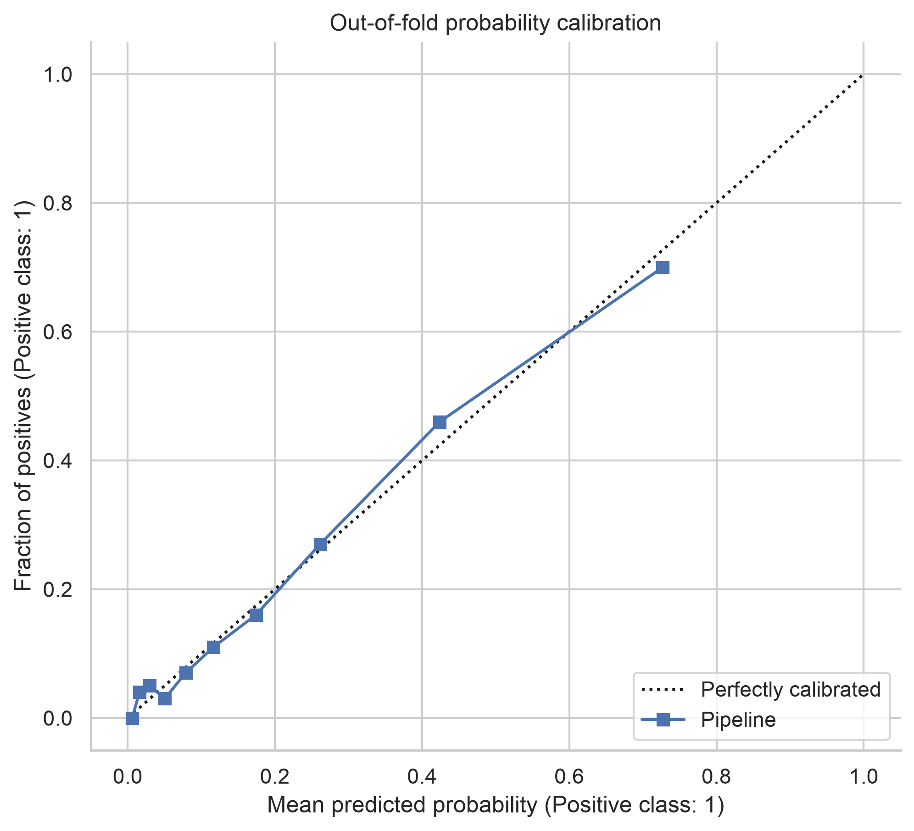

Pipelines and Cross-Validation
Pipelines and cross-validation solve two closely related problems. A pipeline keeps every learned transformation attached to the model, while cross-validation estimates how that complete modelling procedure is likely to perform on unseen data.
This distinction matters. Validation is not reliable when preprocessing is learned from the full dataset before the folds are created. The validation fold has then influenced the training process, even if its outcome was never passed directly to the estimator.
By the end of this chapter, you should be able to:
- combine preprocessing and estimation in one scikit-learn pipeline;
- select a cross-validation strategy that matches the data-generating process;
- obtain out-of-fold predictions and fold-level performance estimates;
- tune a pipeline without leaking validation information; and
- distinguish routine cross-validation from nested model evaluation.
From a fitted model to a modelling procedure
Chapter Model Evaluation and Validation established that evaluation design should be fixed before candidate models are compared. Chapter Model Improvement then developed model improvements within that design. Here, the object being evaluated is the complete modelling procedure:
- learn preprocessing parameters from the training observations;
- transform the training and validation observations separately;
- fit the estimator on the transformed training observations; and
- score predictions for the untouched validation observations.
Cross-validation repeats this procedure across several train-validation splits. Each observation can therefore contribute to validation without being used to fit the model that predicts it.
Why preprocessing belongs inside the pipeline
Operations such as imputation, scaling, encoding, feature selection, and dimensionality reduction learn information from data. If they are fitted before cross-validation, their learned parameters contain information from observations that later appear in validation folds.
# Avoid: the scaler sees every observation before validation begins.
X_scaled = StandardScaler().fit_transform(X)
scores = cross_validate(model, X_scaled, y, cv=cv)Place learned transformations inside a pipeline instead:
from sklearn.impute import SimpleImputer
from sklearn.linear_model import LogisticRegression
from sklearn.pipeline import make_pipeline
from sklearn.preprocessing import StandardScaler
pipeline = make_pipeline(
SimpleImputer(strategy="median"),
StandardScaler(),
LogisticRegression(max_iter=2_000),
)During cross-validation, scikit-learn clones the pipeline for every fold. The imputer and scaler are fitted only on that fold’s training partition.
A pipeline cannot repair a split that already violates the problem structure. Repeated measurements from one person, future observations, or related samples must still be separated using an appropriate validation strategy.
Mixed numerical and categorical predictors
Real datasets often require different transformations for different columns. ColumnTransformer keeps those branches within the same fitted object.
from sklearn.compose import ColumnTransformer
from sklearn.impute import SimpleImputer
from sklearn.pipeline import make_pipeline
from sklearn.preprocessing import OneHotEncoder, StandardScaler
numeric_pipeline = make_pipeline(
SimpleImputer(strategy="median"),
StandardScaler(),
)
categorical_pipeline = make_pipeline(
SimpleImputer(strategy="most_frequent"),
OneHotEncoder(handle_unknown="ignore"),
)
preprocessor = ColumnTransformer(
transformers=[
("numeric", numeric_pipeline, numeric_columns),
("categorical", categorical_pipeline, categorical_columns),
]
)
pipeline = make_pipeline(
preprocessor,
LogisticRegression(max_iter=2_000),
)The fitted pipeline is also the deployment unit. New observations receive the same column selection, imputation, scaling, encoding, and prediction rules used during validation.
Choosing the cross-validation design
The best splitter is determined by how future data will arrive, not by a default number of folds.
| Data structure | Suitable starting point | Main protection |
|---|---|---|
| Independent observations | KFold |
General fold-to-fold variation |
| Imbalanced classification | StratifiedKFold |
Approximate class proportions |
| Repeated subjects or related samples | GroupKFold or StratifiedGroupKFold |
No group in both train and validation |
| Ordered or forecasting data | TimeSeriesSplit |
Training observations precede validation |
| Small datasets needing repeated estimates | Repeated K-fold variants | Sensitivity to a single partition |
For classification with approximately independent observations, a shuffled, stratified design is a defensible starting point:
from sklearn.model_selection import StratifiedKFold
cv = StratifiedKFold(
n_splits=5,
shuffle=True,
random_state=42,
)Fixing random_state makes the partition reproducible. It does not make the performance estimate certain; fold-to-fold variation should still be reported.
Evaluating more than one metric
A single metric rarely describes all relevant behaviour. For an imbalanced classification problem, ROC AUC and average precision can be evaluated together, while fit and scoring times help reveal computational costs.
from sklearn.model_selection import cross_validate
scores = cross_validate(
pipeline,
X,
y,
cv=cv,
scoring={
"roc_auc": "roc_auc",
"average_precision": "average_precision",
},
return_train_score=True,
n_jobs=-1,
)Summarise the fold estimates with their centre and variability:
import pandas as pd
fold_results = pd.DataFrame(scores)
summary = fold_results.agg(["mean", "std"]).T
print(summary.loc[["test_roc_auc", "test_average_precision"]])The standard deviation across folds is a diagnostic of partition sensitivity, not a universal confidence interval. When observations are grouped or ordered, its interpretation depends on the selected splitting design.
Out-of-fold predictions
cross_val_predict returns one prediction for each observation from a model that did not train on that observation. These out-of-fold predictions are useful for pooled diagnostic plots, error analysis, and threshold exploration.
from sklearn.model_selection import cross_val_predict
out_of_fold_probability = cross_val_predict(
pipeline,
X,
y,
cv=cv,
method="predict_proba",
n_jobs=-1,
)[:, 1]Out-of-fold predictions do not replace a final test set when one is required. They are generated while the candidate procedure is still being assessed and may influence later modelling decisions.
Visualising fold stability
The Chapter 12 figure script compares validation performance across folds and constructs a pooled out-of-fold calibration display.
python scripts/python/12-generate-pipeline-cv-figures.pyThe output is written to results/figures/.

Figure Figure 13.1 makes unstable folds visible instead of hiding them behind a mean score. Large variation should prompt investigation of sample size, class balance, grouping, and influential observations.

Figure Figure 13.2 evaluates probability behaviour using predictions made for held-out observations. A calibration curve created from in-sample predictions would be optimistically biased.
Hyperparameter tuning inside cross-validation
Search objects can tune parameters inside a pipeline. Parameter names use the step name followed by two underscores.
from sklearn.model_selection import GridSearchCV
parameter_grid = {
"logisticregression__C": [0.01, 0.1, 1.0, 10.0],
"logisticregression__class_weight": [None, "balanced"],
}
search = GridSearchCV(
estimator=pipeline,
param_grid=parameter_grid,
scoring="average_precision",
cv=cv,
n_jobs=-1,
refit=True,
)
search.fit(X_train, y_train)
best_pipeline = search.best_estimator_If a separate test set was reserved before development, evaluate best_pipeline on it once after the search and decision rules are complete. Repeatedly checking the test set turns it into another validation set.
Nested cross-validation
Using the same cross-validation results both to choose hyperparameters and to report final performance can be optimistic. Nested cross-validation separates these roles:
- the inner loop selects hyperparameters using only the outer training data;
- the outer loop evaluates the selected procedure on unseen outer-fold data.
from sklearn.model_selection import cross_validate
outer_cv = StratifiedKFold(n_splits=5, shuffle=True, random_state=42)
inner_cv = StratifiedKFold(n_splits=4, shuffle=True, random_state=43)
search = GridSearchCV(
pipeline,
parameter_grid,
scoring="average_precision",
cv=inner_cv,
n_jobs=-1,
)
nested_scores = cross_validate(
search,
X,
y,
scoring="average_precision",
cv=outer_cv,
n_jobs=-1,
)Nested cross-validation is most useful when the dataset is too small for a stable holdout set and an approximately unbiased estimate of the entire tuning procedure is important. It is computationally expensive and does not remove the need for an external validation dataset when transportability is the real question.
Common failure modes
Preprocessing before splitting
Any transformation that learns from data must be fitted inside the relevant training partition. This includes feature selection and target-aware encoding, not only scaling and imputation.
Ignoring groups
Random folds can put observations from the same patient, site, household, or experimental unit on both sides of a split. The model may then exploit shared information that will not be available for genuinely new groups.
Randomly splitting time
Shuffling ordered observations allows the model to learn from the future. Temporal validation should reproduce the intended prediction horizon and any gap required by the application.
Tuning outside the pipeline
Feature selection, resampling, and other tuned preprocessing choices belong inside the search object. Otherwise, the validation folds influence which features or transformations are retained.
Reporting only the best fold or best search score
Report the prespecified metrics, their fold-level variation, the splitting strategy, and the complete tuning space. A best score without its selection process is not a reproducible performance claim.
A reproducible workflow
- Define the prediction target, unit of observation, and future use case.
- Reserve a final test set when sample size and study design permit.
- Choose folds that respect classes, groups, time, and dependence.
- Place every learned preprocessing step inside the pipeline.
- Define metrics and tuning rules before comparing candidates.
- Generate fold-level scores and out-of-fold predictions.
- Investigate variability and errors without contaminating the test set.
- Refit the selected pipeline and preserve it as one reproducible object.
Chapter summary
Pipelines ensure that preprocessing is learned within each training fold and reapplied consistently to validation and future data. Cross-validation then estimates the behaviour of that complete procedure across defensible data splits. Together, they reduce leakage, expose instability, and make model selection easier to reproduce.
The most important decision is not whether to use five or ten folds. It is whether the validation design reproduces the independence, grouping, and time structure of the problem the model will face after development.